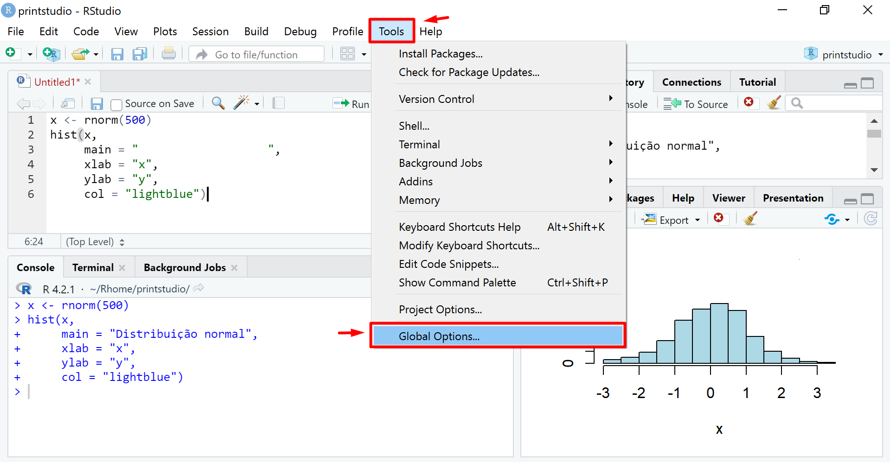

Appendix A — Tutorial de R
A.1 Sobre o software R
R é um ambiente computacional e uma linguagem de programação para manipulação, análise e visualização de dados. Para essas finalidades, ele é considerado um dos melhores e um dos mais utilizados dentre os ambientes computacionais disponíveis. O R é mantido pela R Development Core Team e está disponível para diferentes sistemas operacionais: Linux, Mac e Windows.
O software é livre, ou seja, gratuito, com código aberto em uma linguagem acessível. Nele, estão implementadas muitas metodologias estatísticas. Muitas dessas fazem parte do ambiente base do R e outras acompanham o ambiente sob a forma de pacotes, o que o torna altamente flexível. Os pacotes são bibliotecas com funções extras devidamente documentadas criadas para ajudar a resolver problemas de diferentes áreas do conhecimento.
O R possui uma comunidade extremamente ativa, engajada desde o aprimoramento de ferramentas e desenvolvimento de novas bibliotecas, até o suporte aos usuários. Sobre o desenvolvimento de novas bibliotecas, um pesquisador em Estatística que desenvolve um novo modelo estatístico pode disponibilizá-lo em um pacote acessível aos usuários que se interessem pelo modelo, por exemplo. Além disso, a disponibilidade e compartilhamento da pesquisa em um pacote no R é uma boa prática quando falamos de reprodutibilidade na ciência. Ainda nesse ponto, realizar as análises de uma pesquisa aplicada em um programa livre e acessível a todos é um dos principais pontos para permitir reprodutibilidade.
Optar por programar em R também implica na escolha de uma IDE (Integrated Development Environment). Uma IDE é um ambiente de desenvolvimento integrado onde podem ser combinadas ferramentas utilizadas no desenvolvimento de aplicações, como um editor de código ou uma ferramenta de preenchimento inteligente de código. Para o R, a IDE mais popular entre os usuários é o RStudio. O RStudio é um conjunto de ferramentas integradas projetadas para editar e executar os códigos em R. Assim, quando for o interesse utilizar o R, basta abrir o RStudio (R é automaticamente carregado).
A.2 Instalação do R
A seguir, será apresentado o passo a passo de como instalar o R e o RStudio para os três sistemas operacionais: Windows, MAC e Linux, respectivamente.
A.2.1 R no Windows
A forma mais simples de instalar o R consiste em primeiramente acessar a página do software pelo endereço https://cloud.r-project.org/. Ao acessar a página haverão três opções para download, sendo cada uma referente a um sistema operacional em específico. Assim, para conseguir instalar o software em um sistema operacional Windows basta primeiramente clicar no link Download R for Windows.
Quatro subdiretórios irão surgir, dentre eles é necessário clicar na base, pois este contém a distribuição base do R para instalação.

O subdiretório base irá redirecionar para uma página que contém o link de download do arquivo de instalação do software. Este por sua vez, pode ser identificado como Download + versão atual do R + for Windows.

Feito isso, um arquivo executável será baixado no computador, o qual, ao abri-lo, deverá escolher o idioma (português brasileiro) e simplesmente clicar em Avançar toda vez que o cliente de instalação requerer.


Assim, uma instalação padrão do software será instalada no computador.
A.2.2 R no MAC
Da mesma forma a qual iniciamos a instalação do R no Windows também iniciaremos no MAC, onde é necessário acessar o endereço https://cloud.r-project.org/ e clicar no link Download R for macOS.
O link irá redirecionar para uma página com arquivos de extensão .pkg típicos de macOS. É importante verificar qual versão disponível é a ideal para seu sistema. A versão do tipo arm64.pkg é referente a versão mais recente do macOS na data deste material.

Tendo feito o download do arquivo, basta abri-lo para um cliente de instalação ficar disponível, e então, para efetuar uma instalação padrão deve-se seguir as instruções do cliente sem customizações aditivas assim como foi feito para o Windows.
A.2.3 R no Linux
A instalação do R no Linux depende da distribuição sendo utilizada. Basta acessar o mesmo endereço https://cloud.r-project.org/ utilizado na instalação dos outros sistemas, e clicar no link Download R for Linux.

Feito isso irá aparecer as opções de distribuições para Linux em que o software está disponível para download, basta selecionar a distribuição compatível. Caso sua distribuição for Ubuntu por exemplo, clicamos nela no respectivo link.

Assim, irá ser redirecionado para uma página com as devidas instruções de instalação do R para a distribuição escolhida. Basta seguir as instruções para efetuar uma instalação padrão do software.
A.3 Instalação do RStudio
O RStudio é um conjunto de ferramentas integradas projetadas (IDE - Integrated Development Environment) da linguagem R para auxiliar na produtividade ao utilizar o R. Embora não seja obrigatório o seu uso, é um consenso na comunidade de que o uso do RStudio facilita o aprendizado enquanto acelera a produtividade do usuário, tornando-o indispensável principalmente para iniciantes.
No ano de 2022, RStudio iniciou um processo de transição de nome onde passou a se chamar Posit. O objetivo por de trás desse processo se dá na inclusão da comunidade de Python ao R, dado o crescimento notório do Python na área de análise de dados nos últimos anos e que ambas as linguagens se complementam.
O primeiro passo para instalar o RStudio é acessar o site da Posit e ir até a página de download que pode ser acessada pelo endereço https://posit.co/download/rstudio-desktop/. Feito isso, a página irá apresentar algumas opções, dentre elas uma breve tabela com arquivos executáveis mais recentes disponíveis de instalação do RStudio.

Dentre os arquivos executáveis está a versão mais recente para Windows (retângulo vermelho), macOS (retângulo azul) e para diferentes distribuições do Linux (retângulo verde). É preciso fazer o download conforme o seu sistema operacional.
Após o download basta abrir o arquivo executável baixado e seguir as instruções do cliente para que a instalação seja feita.

A.4 Primeiros passos no RStudio
O RStudio é uma ferramenta que por padrão é dividida em quatro painéis, sendo que cada um deles contêm abas com diferentes utilidades.

A seguir descrevemos melhor os painéis e algumas abas comumente utilizadas do RStudio:
 Editor/Scripts: local para escrever códigos (principalmente arquivos em formato .R).
Editor/Scripts: local para escrever códigos (principalmente arquivos em formato .R).
 Console: onde se executa os códigos e visualiza resultados.
Console: onde se executa os códigos e visualiza resultados.
 Aqui, é possível acessar todos os objetos criados em Environment e o histórico de códigos executados em History e conectar fonte de dados em Connections.
Aqui, é possível acessar todos os objetos criados em Environment e o histórico de códigos executados em History e conectar fonte de dados em Connections.
Nessa área, temos diversas utilidades frequentemente utilizadas:
podemos acessar arquivos e pastas do computador pela aba Files;
na aba Plots, visualizamos resultados em que são gerados figuras (como gráficos e tabelas), caso um comando desse tipo tenha sido executado;
em Packages, podemos manusear pacotes (instalar, atualizar ou deletar);
na aba Help temos acesso à documentação de uma determinada função quando utilizado o comando
help()ou?. Uma função nada mais é do que uma estrutura de código pronta com a forma de acessonome(argumento)que recebe argumentos de entrada e retorna uma resposta. O próprio comandohelp()é uma função.
O usuário pode alterar as configurações padrões do RStudio ao acessar as opções globais.

Para usuários iniciantes, é recomendável configurar a aparência e estrutura (layout) dos painéis conforme a própria preferência para tornar a experiência de uso mais confortável.

Podemos alterar o layout pelo menu Panel Layout. Usualmente, os painéis são estruturados de forma que o painel Console fique ao lado do painel de Script (Source/Editor), facilitando a visualização dos comandos rodados.

A.4.1 Projetos
Uma funcionalidade importante é a criação de projetos, permitindo dividir o trabalho em múltiplos ambientes, cada um com o seu diretório, documentos e workspace.
Para criar um projeto, os seguintes passos podem ser seguidos:
Clique na opção File do menu, e então em New Project.
Clique em New Directory.
Clique em New Project.
Escreva o nome do diretório (pasta) onde deseja manter seu projeto, exemplo: “my_project”.
Clique no botão Create Project.
Para criar um novo script para escrever os códigos, vá em File -> New File -> R Script.
A.4.2 Boas práticas
Comente bem o seu código: é possível fazer comentários usando o símbolo #. É sempre bom explicar o que uma variável armazena, o que uma função faz, por que alguns parâmetros são passados para uma determinada função, qual é o objetivo de um trecho de código, etc.
Evite linhas de código muito longas: usar linhas de código mais curtas ajuda na leitura do código.
Escreva um código organizado. Por exemplo, adote um padrão no uso de minúsculas e maiúsculas, uma lógica única na organização de pastas e arquivos, pode ser adotada uma breve descrição (como comentário) indicando o que um determinado script faz.
Carregue todos os pacotes que irá usar sempre no início do arquivo: quando alguém abrir o seu código será fácil identificar quais são os pacotes que devem ser instalados e quais dependências podem existir.
A.5 Primeiros passos no R
O código pode ser escrito no Script e então ser executado ao apertar o botão Run (localizado no painel de Script) ou com o atalho no teclado Ctrl + Enter. É importante salientar que, apenas a linha em que o símbolo de inserção de código (barra vertical do cursor) estiver é que será executada. Para executar múltiplas linhas simultaneamente, é necessário selecionar as linhas desejadas e então utilizar o comando de execução mencionado.
Outra forma de escrever e executar códigos é através do painel Console. Normalmente, o Console é utilizado para executar códigos sem muitas linhas de estruturação ou para fazer testes rápidos (ex: uso do R como calculadora). Para rodar o código diretamente pelo painel Console, basta escrevê-lo na linha em que contém o símbolo >, o qual indica que o R está pronto para receber comandos, e então pressionar a tecla Enter.
A.5.1 R como calculadora
Uma das utilidades do R é utilizá-lo como uma calculadora, onde podemos realizar contas matemáticas simples até as mais complexas.
Por padrão, o R entende as linhas de códigos da esquerda para a direita e de cima para baixo. No entanto, ao se deparar com operações matemáticas, ele respeita algumas prioridades. A operação com maior para a menor prioridade é: potenciação > multiplicação ou divisão > adição ou subtração. Caso haja a necessidade de alterar essa ordem, isso pode ser feito utilizando parênteses.
# Adição.
10 + 15[1] 25# Subtração.
10 - 2[1] 8# Multiplicação.
2 * 10[1] 20# Divisão.
30/2[1] 15# Raiz quadrada.
sqrt(4)[1] 2# Potência.
2^2[1] 4# Potência > Multiplicação > Soma.
2^2 + 5 * 2[1] 14# Multiplicação > Potência > Soma.
2^2 + (5 * 2)[1] 14# Potência > Soma > Multiplicação.
2 * (2^2 + 5) [1] 18Caso um comando incompleto seja dado, como 10 ^, o R mostrará um +. Isso não tem a ver com a soma e apenas que o R está esperando que o comando que estava sendo escrito seja finalizado. Para recomeçar, basta terminar a escrita do comando ou apenas pressionar Esc.
Vale também ressaltar que se um comando que o R não reconhece for dado, ele retornará uma mensagem de erro.
A.5.2 Atribuição
Os objetos (também chamados de variáveis) são “locais” onde são guardadas informações (números, textos etc). O ato de “guardar” informações dentro de objetos é chamado de atribuição, e pode ser feito com <- ou =. Embora ambas as formas funcionem, na prática, o sinal <- é usualmente utilizado para atribuições enquanto que o sinal = é utilizado para configurar argumentos de funções.
# Variável x recebe o número 5 de diferentes formas.
x <- 5
x = 5
y = (2^2 + 6) - 4
x <- y - 1Um ponto importante a se atentar é que o R é case sensitive, isto é, faz a diferenciação entre as letras minúsculas e maiúsculas. Portanto, x é diferente de X.
# Dica: Podemos obter o output do comando ao colocá-lo em volta de ().
(x <- 10/2)[1] 5# Ao chamar X obteremos um erro, pois a variável criada era minúscula.
XError in eval(expr, envir, enclos): objeto 'X' não encontradoA.5.3 Objetos em R
Existem cinco classes básicas de objetos no R:
Character: “UAH!”
Numeric: 0.95 (números reais)
Integer: 100515 (inteiros)
Complex: 2 + 5i (números complexos, a + bi)
Logical: TRUE (booleanos, TRUE/FALSE)
Após realizar a atribuição, podemos verificar a classe do objeto com a função class().
# Character/texto, deve estar entre aspas "".
x <- "gestante";
class(x) [1] "character"# Numeric/números reais.
x <- 0.9
class(x) [1] "numeric"# Integer/números inteiros, tem que ser atribuído com o valor acompanhado de um ‘L’.
x <- 5L
class(x)[1] "integer"# Complex/números complexos.
x <- 2 + 5i
class(x)[1] "complex"# logical/valores lógicos.
x <- TRUE
class(x)[1] "logical"Os valores lógicos são apresentados em letra maiúscula. Isso é muito importante, pois o R diferencia letras maiúsculas de minúsculas. Então, valores lógicos só são reconhecidos se escritos como TRUE ou FALSE. Além disso, cada valor lógico assume um valor numérico, sendo TRUE referente ao valor 1 e FALSE referente ao valor 0.
# Operações matemáticas com valores lógicos.
(TRUE*2)^2 + TRUE + FALSE + 2*TRUE[1] 7Muitas vezes é do interesse do usuário apagar objetos que foram criados, principalmente se for rodar códigos prontos em um ambiente que outra pessoa estava trabalhando, pois pode haver objetos já criados com os mesmos nomes dos que se encontram no código/script de interesse, o que poderá levar a erros e dificuldades de execução. A remoção de objetos pode ser feito com a função rm() ou remove().
# Criando o objeto x.
x <- 20
x[1] 20# Removendo o objeto x.
rm(x)
xError in eval(expr, envir, enclos): objeto 'x' não encontrado# Removendo todos os objetos criados.
(x <- 1)[1] 1(y <- 2)[1] 2rm(list=ls())
xError in eval(expr, envir, enclos): objeto 'x' não encontradoyError in eval(expr, envir, enclos): objeto 'y' não encontradoVale notar que ao utilizar a função rm() ou a função remove() para remover todos os objetos criados, é necessário incluir um argumento chamado list onde utilizamos o sinal de = para especificar os objetos a serem deletados. A função ls() lista todos os objetos criados até o momento.
A.5.4 Vetores
No R a estrutura mais básica de dados é chamada de Vector (vetor), podendo aparecer no formado Atomic (atômico) ou no formado de list (lista). Dentre os vetores atômicos existem quatro tipos, sendo eles: Character, Integer, Double e Logical.

Com vetores podemos atribuir vários valores a um mesmo objeto. Para entrar com vários números (ou nomes, ou qualquer outro grupo de coisas), precisamos usar uma função para dizer ao programa que os valores serão combinados em um único vetor. Para criar vetores atômicos a função c() é a mais usual por podermos criar vetores atômicos de todos os tipos diretamente. Também podemos utilizar a função seq() e o símbolo : para criar vetores do tipo Integer, e a função rep() que é capaz de criar vetores Double, por exemplo. Além disso, podemos verificar o tipo do vetor com a função typeof().
# Vetor Double com a função c().
(vetor1 <- c(2.5, 3, 4/5))[1] 2.5 3.0 0.8typeof(vetor1)[1] "double"# Vetor Integer com a função c().
(vetor2 <- c(5L, 7L, 9L))[1] 5 7 9typeof(vetor2)[1] "integer"# Vetor Character com a função c().
(vetor3 <- c("hospital1", "hospital2"))[1] "hospital1" "hospital2"typeof(vetor3)[1] "character"# Vetor Logical com a função c().
(vetor4 <- c(TRUE, FALSE, FALSE, TRUE))[1] TRUE FALSE FALSE TRUEtypeof(vetor4)[1] "logical"# Vetor Integer com a função seq().
(vetor5 <- seq(1, 5))[1] 1 2 3 4 5typeof(vetor5)[1] "integer"# Vetor Integer com o símbolo :.
(vetor6 <- 1:10) [1] 1 2 3 4 5 6 7 8 9 10typeof(vetor6)[1] "integer"# Vetor Double com a função rep().
(vetor7 <- rep(1,10)) [1] 1 1 1 1 1 1 1 1 1 1typeof(vetor7)[1] "double"É comum o usuário querer saber o tamanho do vetor que ele está trabalhando, isso pode ser feito com a função length(). Além disso, é importante ter certeza de que estamos trabalhando com um vetor atômico, o que pode ser verificado com a função is.vector().
# Podemos construir um vetor com vetores dentro da função c().
(vetor <- c(c(1, 2), rep(1, 2), seq(1, 2), 1:2))[1] 1 2 1 1 1 2 1 2is.vector(vetor)[1] TRUEtypeof(vetor)[1] "double"length(vetor)[1] 8Observe que é possível criar um vetor com elementos de diferentes tipos. Sabemos que a função rep() gera um vetor de tipo Double e a seq() gera um vetor de tipo Integer, e ao criar um vetor utilizando a função c() em conjunto com estas obtemos um vetor de tipo Double, de forma que o R priorizou este tipo ao invés do Integer. No R isso é chamado de coerção, onde o vetor sendo criado irá manter o tipo de maior prioridade dentre os seus elementos, e os elementos de tipos com menor prioridade serão convertidos para o tipo prioritário. Isso ocorre, pois todos os elementos de um vetor atômico devem ter o mesmo tipo. Para os tipos apresentados temos como o de menor prioridade para o maior: Logical < Integer < Double < Character. Além disso, se considerarmos Complex e List, teremos List com maior prioridade seguido de Character e Complex.
Pode ser do interesse do usuário visualizar elementos específicos que existem dentro de um vetor, isso pode ser feito ao especificar a posição do elemento dentro do vetor entre os símbolos [].
# vetor com varios elementos.
vet <- c(TRUE, 5, 7L, "hospital")
typeof(vet)[1] "character"# elemento de posição 3.
vet[3][1] "7"# elementos das posições 2, 3 e 4.
vet[2:4][1] "5" "7" "hospital"As operações vetoriais podem ser realizadas de maneira bastante intuitiva, pois em vetores atômicos as operações são realizadas elemento a elemento.
# Operações com vetores.
vetor1 <- c(4, 9, 16)
(vetor1_menos1 <- vetor1 - 1)[1] 3 8 15(vetor1_vezes2 <- vetor1 * 2)[1] 8 18 32(vetor1_dividido2 <- vetor1/2)[1] 2.0 4.5 8.0(vetor1_raiz <- sqrt(vetor1))[1] 2 3 4vetor2 <- c(1, 2, 3)
(vetor1_mais_vetor2 <- vetor1 + vetor2)[1] 5 11 19Vamos agora considerar vetores de pesos (quilos) e alturas (metros) de 6 pessoas.
# Vetores de peso e de quilo.
(peso <- c(62, 70, 52, 98, 90, 70))[1] 62 70 52 98 90 70(altura <- c(1.70, 1.82, 1.75, 1.94, 1.84, 1.61))[1] 1.70 1.82 1.75 1.94 1.84 1.61# Obs: note que o separador decimal do R é um . (ponto).Podemos a partir dessas informações calcular o IMC. Vale lembrar que o IMC é dado pelo peso (em kg) dividido pela altura (em metros) ao quadrado.
(imc <- peso/(altura^2))[1] 21.45329 21.13271 16.97959 26.03890 26.58318 27.00513É importante saber que, no R, vetores são a base dos demais objetos. Objetos com apenas um elemento, por exemplo, não são considerados escalares, mas vetores de tamanho um. Em outras palavras, os próprios elementos de um vetor são também vetores.
elemento1 <- ""
is.vector(elemento1)[1] TRUElength(elemento1)[1] 1elemento2 <- 5
is.vector(elemento2)[1] TRUElength(elemento2)[1] 1elemento3 <- TRUE
is.vector(elemento3)[1] TRUElength(elemento3)[1] 1Além dos vetores de formato atômico também existem os de formado lista, que diferente dos atômicos, as listas podem ter elementos de tipos diferentes de forma que não há necessidade do R efetuar coerções. Para criar listas no R podemos utilizar a função list().
# Lista com vários tipos de elementos (inclusive listas).
(lista <- list(5, "hospital", list(1:5), c(rep(1, 2)), seq(1, 2)))[[1]]
[1] 5
[[2]]
[1] "hospital"
[[3]]
[[3]][[1]]
[1] 1 2 3 4 5
[[4]]
[1] 1 1
[[5]]
[1] 1 2is.vector(lista)[1] TRUEtypeof(lista)[1] "list"length(lista)[1] 5# Dica: podemos verificar a estrutura de qualquer objeto com a função str().
str(lista)List of 5
$ : num 5
$ : chr "hospital"
$ :List of 1
..$ : int [1:5] 1 2 3 4 5
$ : num [1:2] 1 1
$ : int [1:2] 1 2# Dica: podemos retornar uma lista para vetor atômico com a função unlist().
unlist(lista) [1] "5" "hospital" "1" "2" "3" "4"
[7] "5" "1" "1" "1" "2" A.5.5 Matrizes
Matrizes são vetores numéricos com duas dimensões, sendo estas a linha e a coluna às quais o elemento pertence. No R podemos criar matrizes com a função matrix().
# Criando uma matriz de 16 elementos com 4 linhas e 4 colunas.
(matri <- matrix(seq(1,16), nrow = 4, ncol = 4)) [,1] [,2] [,3] [,4]
[1,] 1 5 9 13
[2,] 2 6 10 14
[3,] 3 7 11 15
[4,] 4 8 12 16str(matri) int [1:4, 1:4] 1 2 3 4 5 6 7 8 9 10 ...# Podemos verificar se é uma matriz com a função is.matrix().
is.matrix(matri)[1] TRUENote que os números de 1 a 16 foram dispostos na matriz coluna por coluna, ou seja, preenchendo de cima para baixo e depois da esquerda para a direita. Isso ocorre por padrão, pois a função matrix() possui um argumento chamado byrow = FALSE em que, para criar uma matriz em que é preenchida de elementos por linha, basta alterar o argumento para byrow = TRUE. Além disso, a função seq() está gerando os elementos da matriz enquanto o argumento nrow indica o número de linhas e ncol o número de colunas.
Para visualizar um elemento específico de uma matriz podemos utilizar o mesmo método que usamos com vetores. Lembrando que matrizes ainda são vetores, porém, com uma dimensão a mais. Então, para visualizar um elemento específico devemos indicar a posição do elemento para todas as dimensões existentes, no caso das matrizes, para linha e coluna.
# Obtendo linhas, colunas e elementos específicos.
matri[3, ] # seleciona a 3ª linha.[1] 3 7 11 15matri[ , 2] # seleciona a 2ª coluna.[1] 5 6 7 8matri[1, 2] # seleciona o elemento da primeira linha e segunda coluna.[1] 5Perceba que cada linha e cada coluna de uma matriz é um vetor (uma dimensão). Assim, podemos alterar uma linha ou uma coluna atribuindo um vetor de interesse, por exemplo.
# substituindo a primeira linha e quarta coluna da matriz.
matri[1, ] <- c(9, 9, 9, 9)
matri [,1] [,2] [,3] [,4]
[1,] 9 9 9 9
[2,] 2 6 10 14
[3,] 3 7 11 15
[4,] 4 8 12 16matri[, 4] <- rep(1, 4)
matri [,1] [,2] [,3] [,4]
[1,] 9 9 9 1
[2,] 2 6 10 1
[3,] 3 7 11 1
[4,] 4 8 12 1É de importância para o usuário verificar o tamanho (número de elementos) quando se trata de vetores. Porém, quando se trata de matrizes, é importante conhecer as dimensões além do número de elementos. Para verificar as dimensões de uma matriz podemos utilizar a função dim(), enquanto para o tamanho (número de elementos) ainda podemos utilizar a função length().
# Verificando o tamanho e dimensões da matriz.
length(matri)[1] 16dim(matri)[1] 4 4Como sabemos que as linhas e colunas de uma matriz são vetores, podemos adicionar mais linhas e colunas a ela com os elementos que queremos. Para concatenar linhas e colunas em uma matriz podemos utilizar as funções rbind() e cbind() respectivamente.
vet1 <- c(99, 98, 97, 95)
vet2 <- c(0, 5, 7, 9, 99)
(matri <- rbind(matri, vet1)) [,1] [,2] [,3] [,4]
9 9 9 1
2 6 10 1
3 7 11 1
4 8 12 1
vet1 99 98 97 95(matri <- cbind(matri, vet2)) vet2
9 9 9 1 0
2 6 10 1 5
3 7 11 1 7
4 8 12 1 9
vet1 99 98 97 95 99Operações matemáticas entre matrizes e elementos são realizadas elemento a elemento assim como vetores. Porém, quando se trata de matrizes, é de interesse efetuar a multiplicação matricial clássica, o que pode ser feito com a operação %*% respeitando a equidade do número de colunas da matriz que pré-multiplica e o número de linhas da matriz que pós-multiplica.
# Criando duas matrizes 2x2 (duas linhas e duas colunas).
(matriz1 <- matrix(c(rep(1, 2), rep(2, 2)), nrow = 2)) [,1] [,2]
[1,] 1 2
[2,] 1 2(matriz2 <- matrix(c(rep(2, 2), rep(2, 2)), nrow = 2)) [,1] [,2]
[1,] 2 2
[2,] 2 2# Soma duas matrizes (elemento a elemento).
matriz1 + matriz2 [,1] [,2]
[1,] 3 4
[2,] 3 4# Subtrai duas matrizes (elemento a elemento).
matriz1 - matriz2 [,1] [,2]
[1,] -1 0
[2,] -1 0# Divide duas matrizes (elemento a elemento).
matriz1/matriz2 [,1] [,2]
[1,] 0.5 1
[2,] 0.5 1# Multiplica duas matrizes (elemento a elemento).
matriz1 * matriz2 [,1] [,2]
[1,] 2 4
[2,] 2 4# Multiplicação matricial clássica.
matriz1 %*% matriz2 [,1] [,2]
[1,] 6 6
[2,] 6 6# Potência de uma matriz (elemento a elemento).
(matriz3 <- matriz2^2) [,1] [,2]
[1,] 4 4
[2,] 4 4# Raiz quadrada de uma matriz (elemento a elemento).
sqrt(matriz3) [,1] [,2]
[1,] 2 2
[2,] 2 2A.5.6 Fatores
É muito comum termos que lidar com variáveis categóricas, ou seja, variáveis que possuem categorias intrínsecas em sua natureza. No R, existe uma classe de objetos chamada Fatores especificamente para representar esse tipo de variável (nominal e ordinal). Os fatores podem ser vistos como vetores de elementos numéricos inteiros (pois são assim internamente representados no R) e possuem rótulos (labels). Consequentemente, são vetores do tipo Double.
# Criando um vetor/variável com a informação do sexo de 7 pessoas.
(sexo1 <- c("Mulher", "Homem", "Homem", "Mulher", "Mulher", "Mulher", "Homem"))[1] "Mulher" "Homem" "Homem" "Mulher" "Mulher" "Mulher" "Homem" # Verificando a classe da variável sexo1.
class(sexo1)[1] "character"# Transformando em fator.
(sexo2 <- as.factor(sexo1))[1] Mulher Homem Homem Mulher Mulher Mulher Homem
Levels: Homem Mulherclass(sexo2)[1] "factor"# Verificando os levels da variável de classe factor (sexo2).
levels(sexo2)[1] "Homem" "Mulher"Podemos verificar que a variável é representada internamente por elementos numéricos inteiros ao tentar transformá-la em um vetor numérico com a função as.numeric().
# Ao transformar sexo1 obteremos um vetor de dados faltantes (NA) por coerção.
as.numeric(sexo1)Warning: NAs introduzidos por coerção[1] NA NA NA NA NA NA NA# Ao transformar sexo2 obteremos um vetor double com valores inteiros.
(sexo2_num <- as.numeric(sexo2))[1] 2 1 1 2 2 2 1typeof(sexo2_num)[1] "double"Fatores possuem levels em ordem alfabética, e isso pode influenciar diretamente na hora de construir gráficos e realizar aplicações de modelos.
A.5.7 Data Frame
Trata-se de uma “tabela de dados” onde as colunas são as variáveis e as linhas são os registros, e as colunas podem ser de classes diferentes. Logo, a principal diferença entre data frame e matriz é que matrizes só podem conter elementos da mesma classe.
Para criar data frame no R é utilizado a função data.frame().
# Colunas/variáveis para o data frame.
ID <- seq(1,6)
pes <- c(62, 70, 52, 98, 90, 70)
alt <- c(1.70, 1.82, 1.75, 1.94, 1.84, 1.61)
imc <- pes/(alt^2)
# Criando o data frame.
(dados <- data.frame(ID = ID, peso = pes, altura = alt, imc = imc)) ID peso altura imc
1 1 62 1.70 21.45329
2 2 70 1.82 21.13271
3 3 52 1.75 16.97959
4 4 98 1.94 26.03890
5 5 90 1.84 26.58318
6 6 70 1.61 27.00513Podemos pensar na estrutura de um data frame da mesma forma que de uma matriz. Se por acaso for do interesse olhar os dados de altura, por exemplo, basta acessar a coluna três do data frame.
# Selecionando a variável "altura".
dados[, 3][1] 1.70 1.82 1.75 1.94 1.84 1.61Embora possamos usar os mesmos métodos discutidos na seção de matrizes, quando se trata de data frames, usualmente selecionamos as variáveis de interesse sem ter que saber em qual coluna ela está. Isso pode ser feito ao utilizar o símbolo $, dessa forma a coluna será selecionada em forma de vetor.
# Selecionando a variável "altura".
dados$altura[1] 1.70 1.82 1.75 1.94 1.84 1.61# Dica: também é possível fazer a seleção de colunas da seguinte forma:
dados[, c("altura", "peso")] altura peso
1 1.70 62
2 1.82 70
3 1.75 52
4 1.94 98
5 1.84 90
6 1.61 70Utilizando o mesmo símbolo podemos adicionar ou deletar colunas.
# Adicionando a variável "grupo".
gr <- c(rep(1,3),rep(2,3))
dados$grupo <- gr
dados ID peso altura imc grupo
1 1 62 1.70 21.45329 1
2 2 70 1.82 21.13271 1
3 3 52 1.75 16.97959 1
4 4 98 1.94 26.03890 2
5 5 90 1.84 26.58318 2
6 6 70 1.61 27.00513 2# Deletando a variável "grupo".
dados$grupo <- NULL
dados ID peso altura imc
1 1 62 1.70 21.45329
2 2 70 1.82 21.13271
3 3 52 1.75 16.97959
4 4 98 1.94 26.03890
5 5 90 1.84 26.58318
6 6 70 1.61 27.00513Note que ao adicionar variáveis a um data frame essa variável tem que ter o mesmo número de elementos que as demais variáveis, caso isso não seja respeitado o R ira retornar um erro.
A estrutura de data frame é provavelmente a mais utilizada no dia a dia de quem analisa dados. Sabendo disso, existem algumas funções que são importantes de um usuário de R ter em mente.
head()- Mostra as primeiras 6 linhas.tail()- Mostra as últimas 6 linhas.dim()- Número de linhas e de colunas.names()- Os nomes das colunas (variáveis).str()- Estrutura do data frame. Mostra, entre outras coisas, a classe de cada coluna.
Algumas dessas funções já foram abordadas ao longo do texto. As funções de visualização head() e tail() possuem um argumento chamado n o qual podemos customizar o número de linhas que queremos visualizar.
head(dados, n = 4) ID peso altura imc
1 1 62 1.70 21.45329
2 2 70 1.82 21.13271
3 3 52 1.75 16.97959
4 4 98 1.94 26.03890tail(dados, n = 4) ID peso altura imc
3 3 52 1.75 16.97959
4 4 98 1.94 26.03890
5 5 90 1.84 26.58318
6 6 70 1.61 27.00513dim(dados)[1] 6 4names(dados)[1] "ID" "peso" "altura" "imc" str(dados)'data.frame': 6 obs. of 4 variables:
$ ID : int 1 2 3 4 5 6
$ peso : num 62 70 52 98 90 70
$ altura: num 1.7 1.82 1.75 1.94 1.84 1.61
$ imc : num 21.5 21.1 17 26 26.6 ...Cada coluna do data frame pode ser interpretada como um vetor. Dessa forma, as operações de vetores discutidas anteriormente são válidas.
# Cria uma coluna do produto de peso por altura.
dados$pesovezesaltura <- dados$peso * dados$altura
dados ID peso altura imc pesovezesaltura
1 1 62 1.70 21.45329 105.40
2 2 70 1.82 21.13271 127.40
3 3 52 1.75 16.97959 91.00
4 4 98 1.94 26.03890 190.12
5 5 90 1.84 26.58318 165.60
6 6 70 1.61 27.00513 112.70# Cria uma coluna de peso + cinco.
dados$peso5 <- dados$peso + 5
dados ID peso altura imc pesovezesaltura peso5
1 1 62 1.70 21.45329 105.40 67
2 2 70 1.82 21.13271 127.40 75
3 3 52 1.75 16.97959 91.00 57
4 4 98 1.94 26.03890 190.12 103
5 5 90 1.84 26.58318 165.60 95
6 6 70 1.61 27.00513 112.70 75# Cria uma coluna da metade do peso original.
dados$pesometade <- dados$peso/2
dados ID peso altura imc pesovezesaltura peso5 pesometade
1 1 62 1.70 21.45329 105.40 67 31
2 2 70 1.82 21.13271 127.40 75 35
3 3 52 1.75 16.97959 91.00 57 26
4 4 98 1.94 26.03890 190.12 103 49
5 5 90 1.84 26.58318 165.60 95 45
6 6 70 1.61 27.00513 112.70 75 35A.5.8 Operadores lógicos
Sabemos que TRUE e FALSE são objetos que pertencem à classe logical, além de terem representação numérica de 1 e 0 respectivamente.
A operação lógica nada mais é do que um teste que retorna verdadeiro (TRUE) ou falso (FALSE). Assim, podemos realizar comparações entre valores utilizando alguns operadores específicos.
# Verifica se 9 é igual a 12.
9 == 12[1] FALSE# Verifica se 12 é igual a 12.
12 == 12[1] TRUE# Verifica se 9 é diferente de 12.
9 != 12[1] TRUE# Verifica se 9 é maior que 5.
9 > 5[1] TRUE# Verifica se 9 é maior ou igual a 9.
9 >= 9[1] TRUE# Verifica se 4 é menor que 4.
4 < 4[1] FALSE# Verifica se 4 é menor ou igual que 4.
4 <= 4[1] TRUEPodemos notar que estes operadores funcionam bem com números, mas isso não é verdade quando se trata de objetos do tipo character (texto). Dentre esses, o operador == apenas funciona com números e o != funciona normalmente tanto com números quanto para textos. Os operadores >, >=, < e <= funcionam com textos pensando na ordem alfabética destes.
Podemos utilizar operadores de comparação múltipla mais usuais em conjunto com estes discutidos para tornar as comparações ainda mais dinâmicas.
- E: & - será verdadeiro se todas operações forem TRUE.
x <- 17
# Verifica se x > 9 é verdadeiro E x < 50 é verdadeiro.
(x > 9) & (x < 50)[1] TRUE# Verifica se x < 9 é verdadeiro E x < 50 é verdadeiro E x > 17 é verdadeiro.
(x > 9) & (x < 50) & (x > 17)[1] FALSE- OU: | - será verdadeiro se pelomenos uma operação for TRUE.
x <- 17
# Verifica se x < 9 é verdadeiro OU x < 50 é verdadeiro.
(x < 9) | (x < 50)[1] TRUE# Verifica se x < 9 é verdadeiro OU x > 50 é verdadeiro OU x <= 17 é verdadeiro.
(x < 9) | (x > 50) | (x <= 17)[1] TRUE- Negação: ! - nega a resposta lógica da comparação.
x <- 17
# Retorna TRUE se x < 50 for FALSE, e FALSE caso contrário.
!(x < 50)[1] FALSEPodemos verificar se um valor (ou conjunto de valores) está contido em um vetor utilizando o operador %in%.
ex <- 1:15
# Verifica se os valores 3 e 5 fazem parte dos elementos do vetor ex.
c(3, 5) %in% ex[1] TRUE TRUE# Dica: o operador %in% também funciona com character:
texto <- c("hospital1", "hospital2", "hospital3", "hospital4", "hospital5")
c("hospital5", "UTI") %in% texto[1] TRUE FALSETodos esses operadores podem ser utilizados ao manipular data frames. Iremos aproveitar o data frame criado anteriormente e adicionar mais duas colunas de textos para realizar alguns testes.
# Visualizando o data frame criado anteriormente
dados ID peso altura imc pesovezesaltura peso5 pesometade
1 1 62 1.70 21.45329 105.40 67 31
2 2 70 1.82 21.13271 127.40 75 35
3 3 52 1.75 16.97959 91.00 57 26
4 4 98 1.94 26.03890 190.12 103 49
5 5 90 1.84 26.58318 165.60 95 45
6 6 70 1.61 27.00513 112.70 75 35# Adicionando a coluna sexo.
dados$sexo <- c("M", "F", "M", "F", "F", "M")
# Adicionando a coluna olhos (preenchimento impreciso = F).
dados$olhos <- c("preto", "castanho", "F", "preto", "azul", "F")
dados ID peso altura imc pesovezesaltura peso5 pesometade sexo olhos
1 1 62 1.70 21.45329 105.40 67 31 M preto
2 2 70 1.82 21.13271 127.40 75 35 F castanho
3 3 52 1.75 16.97959 91.00 57 26 M F
4 4 98 1.94 26.03890 190.12 103 49 F preto
5 5 90 1.84 26.58318 165.60 95 45 F azul
6 6 70 1.61 27.00513 112.70 75 35 M F# Utilizando o operador %in% para obter as linhas com a cor dos olhos imprecisa.
dados[dados$olhos %in% dados$sexo, ] ID peso altura imc pesovezesaltura peso5 pesometade sexo olhos
3 3 52 1.75 16.97959 91.0 57 26 M F
6 6 70 1.61 27.00513 112.7 75 35 M F# %in% com ! para obter as linhas com a cor dos olhos correta.
dados[!(dados$olhos %in% dados$sexo), ] ID peso altura imc pesovezesaltura peso5 pesometade sexo olhos
1 1 62 1.70 21.45329 105.40 67 31 M preto
2 2 70 1.82 21.13271 127.40 75 35 F castanho
4 4 98 1.94 26.03890 190.12 103 49 F preto
5 5 90 1.84 26.58318 165.60 95 45 F azul# Linhas onde o peso é menor que o imc + 40. Retorna apenas colunas peso e imc.
dados[(dados$peso < (dados$imc + 40)), c("peso", "imc")] peso imc
3 52 16.97959A.5.9 Dados faltantes, infinitos e indefinições matemáticas
Dados faltantes é uma das coisas mais comuns em bases de dados, podendo surgir por diferentes fatores. No R, dados faltantes são representados por NA e é um símbolo que todo usuário deve conhecer e saber lidar. Além do NA, símbolos como NaN e Inf também são muito comuns no dia a dia.
NA(Not Available): dado faltante/indisponível.NaN(Not a Number): indefinições matemáticas. Como 0/0 e log(-1).Inf(Infinito): número muito grande ou o limite matemático. Aceita sinal negativo (-Inf).
x <- c(1, 6, 9)
# Retorna NA
x[4][1] NA# Retorna NaN
log(-10)Warning in log(-10): NaNs produzidos[1] NaN# Retorna Inf
10^14321[1] InfAo lidar com bases de dados é necessário saber verificar se ela apresenta dados faltantes.
# Base de dados que estamos usando.
dados ID peso altura imc pesovezesaltura peso5 pesometade sexo olhos
1 1 62 1.70 21.45329 105.40 67 31 M preto
2 2 70 1.82 21.13271 127.40 75 35 F castanho
3 3 52 1.75 16.97959 91.00 57 26 M F
4 4 98 1.94 26.03890 190.12 103 49 F preto
5 5 90 1.84 26.58318 165.60 95 45 F azul
6 6 70 1.61 27.00513 112.70 75 35 M F# Adiciona linhas com dados faltantes.
dados <- rbind(dados, c(6, NA, 1.75, NA, 125, 99, 50, "M", "castanho"))
dados <- rbind(dados, c(9, 50, NA, 50, 127, 97, 55, "F", "azul"))
# Deleta colunas que não iremos mais usar.
dados[, c("pesovezesaltura", "peso5", "pesometade")] <- NULL
dados ID peso altura imc sexo olhos
1 1 62 1.7 21.4532871972318 M preto
2 2 70 1.82 21.1327134404057 F castanho
3 3 52 1.75 16.9795918367347 M F
4 4 98 1.94 26.0388989265597 F preto
5 5 90 1.84 26.5831758034026 F azul
6 6 70 1.61 27.0051309748852 M F
7 6 <NA> 1.75 <NA> M castanho
8 9 50 <NA> 50 F azul# Ao incluir NA a variável imc passou a apresentar mais casas decimais.
# Dica: podemos arredondar os valores do vetor alterados com a função round().
dados[1:6, "imc"] <- round(as.numeric(dados[1:6, "imc"]), digits = 2)
dados ID peso altura imc sexo olhos
1 1 62 1.7 21.45 M preto
2 2 70 1.82 21.13 F castanho
3 3 52 1.75 16.98 M F
4 4 98 1.94 26.04 F preto
5 5 90 1.84 26.58 F azul
6 6 70 1.61 27.01 M F
7 6 <NA> 1.75 <NA> M castanho
8 9 50 <NA> 50 F azul# Avalia se os elementos da coluna peso são NA ou não.
is.na(dados$peso)[1] FALSE FALSE FALSE FALSE FALSE FALSE TRUE FALSE# Verifica se existe pelomenos 1 dado faltante no data frame.
any(is.na(dados))[1] TRUE# Filtra apenas as linhas com NA na variável peso.
dados[is.na(dados$peso),] ID peso altura imc sexo olhos
7 6 <NA> 1.75 <NA> M castanho# Dica: as funções na.omit() e complete.cases() podem remover linhas com NA.
na.omit(dados) ID peso altura imc sexo olhos
1 1 62 1.7 21.45 M preto
2 2 70 1.82 21.13 F castanho
3 3 52 1.75 16.98 M F
4 4 98 1.94 26.04 F preto
5 5 90 1.84 26.58 F azul
6 6 70 1.61 27.01 M Fdados[complete.cases(dados), ] ID peso altura imc sexo olhos
1 1 62 1.7 21.45 M preto
2 2 70 1.82 21.13 F castanho
3 3 52 1.75 16.98 M F
4 4 98 1.94 26.04 F preto
5 5 90 1.84 26.58 F azul
6 6 70 1.61 27.01 M FPara lidar com dados faltantes é importante ter pelo menos uma ideia do motivo para eles existirem na base de dados sendo analisada. Muitas vezes não temos ideia desse motivo, e a melhor estratégia acaba sendo analisar os dados, incluindo e reportando com transparência os dados faltantes. Ao analisar dados sem excluir os casos faltantes, muitas vezes nos deparamos com erros inesperados que ocorrem por tentarmos usar funções que não estão considerando esses casos. Situações como essas exigem uma atenção a mais do usuário, tendo que pesquisar e ler documentações de funções para ter certeza do que a função sendo usada está fazendo.
# Criando um vetor com dados faltante.
vetor1 <- c(NA, 1, 1, 1, 5)
# mean() calcula a média do vetor.
mean(vetor1)[1] NA# Inclui argumento que desconsidera dado faltante caso existir.
mean(vetor1, na.rm = TRUE)[1] 2# sum() calcula a soma dos elementos do vetor.
sum(vetor1)[1] NA# Inclui argumento que desconsidera dado faltante caso existir.
sum(vetor1, na.rm = TRUE)[1] 8A.5.10 Condicionamento: If e else
As estruturas if e else, também chamadas de condicionais, servem para executar códigos apenas se uma condição (teste lógico) for satisfeita.
valor1 <- 224
valor2 <- 225
# Cria objeto "resposta" de acordo com uma condição.
if (valor1 == valor2) { # se valor1 for igual ao valor2.
resposta <- 10 # resposta é 10.
} else { # caso contrário.
resposta <- 15 # respota é 15.
}
resposta[1] 15Veja que o R só executa o conteúdo das chaves {} se a expressão dentro dos parênteses () retornar TRUE. Além disso, note que a condição de igualdade é representada por dois iguais (==). Como dito anteriormente, apenas um igual (=) é símbolo de atribuição (preferível <-), em argumentos de estruturas condicionais queremos realizar comparações.
Para utilizar mais condições podemos utilizar o else if ().
valor1 <- 224
valor2 <- 225
# Cria objeto "resposta" de acordo com uma condição.
if (valor1 == valor2) { # se valor1 for igual ao valor2.
resposta <- 10 # resposta é 10.
} else if (valor1 > valor2) { # Se não, então valor1 é maior que valor2 ?
resposta <- 15 # então a resposta é 15.
} else { # caso contrário.
resposta <- 25 # respota é 25.
}
resposta[1] 25A.5.11 Iterador for
O for serve para repetir uma mesma tarefa para um conjunto de valores diferentes (realiza um loop). Cada repetição é chamada de iteração.
Como exemplo, considere o vetor atribuído ao objeto vetor1 como segue:
vetor1 <- c(1,20,50,60,100)Podemos criar um novo vetor que seja formado por cada elemento do vetor1 dividido por sua posição.
vetor2 <- NULL
for (i in 1: length(vetor1)){
vetor2[i] <- vetor1[i]/i
}
vetor2[1] 1.00000 10.00000 16.66667 15.00000 20.00000Note que primeiro definimos o objeto vetor2, recebendo NULL. O NULL representa a ausência de um objeto e serve para já declarar algum objeto que receberá valor na sequência. Ao rodar o for, o vetor2 passa a ser um vetor de tamanho 5 (tamanho do vetor1).
No exemplo, temos 5 iterações e para cada valor de i, correndo de 1 até 5 (tamanho do vetor1), pegamos o valor do vetor1 na posição i e dividimos por i. Assim, formamos o vetor2.
A.5.12 Funções
Funções no R são nomes que guardam um código de R. A ideia é que sempre que rodar a função com os seus argumentos, o código que ela guarda será executado e o resultado será retornado.
Já usamos anteriormente algumas funções que estão na base do R. Por exemplo, quando usamos class() para entender a classe do objeto que o R está entendendo. Colocamos um argumento dentro do parêntese e o R retornou qual a classe do objeto em questão.
Importantes:
Se a função tiver mais de um argumento, eles são sempre separados por vírgulas;
Cada função tem os seus próprios argumentos. Para saber quais são e como usar os argumentos de uma função, basta acessar a sua documentação. Uma forma de fazer isso é pela função
help(), cujo argumento é o nome da função em questão.
help(mean)Veja que abrirá a documentação sobre a função mean no menu “Help” do RStudio. Assim, é possível ver os argumentos e exemplos de uso da função.
Ainda sobre funções já presentes no R, vamos considerar agora a função sample. Veja a documentação dessa função para ver o que ela faz.
help(sample)A função sample retorna uma amostra de um vetor com tamanho especificado em um de seus argumentos com ou sem reposição. Ela apresenta quatro argumentos na forma sample(x, size, replace = FALSE, prob = NULL), em que: x é o vetor do qual será amostrado o número de elementos especificado no argumento size, replace indica se é com ou sem reposição e prob é para especificar probabilidades de seleção.
Podemos usar essa função para amostrar de um objeto dois elementos (size = 2) em uma seleção com reposição (replace = TRUE) e que a probabilidade de seleção seja a mesma para todos os elementos do vetor. No caso da probabilidade, como podemos ver na documentação da função sample, o default (padrão se o usuário não mudar o argumento) é ser a mesma probabilidade de seleção para todos os elementos. Assim, se o usuário nada especificar para esse argumento, o R entenderá o seu default. O mesmo vale para o argumento replace: caso fosse o interesse fazer a seleção sem reposição, não precisaríamos colocar esse argumento por seu default ser FALSE.
[1] 20 2Também poderíamos usar a mesma função sem colocar o nome dos argumentos, desde que o usuário entenda o que ela está fazendo.
sample(vetor_am, 2 , TRUE) [1] 20.0 0.5Nesse caso, é importante que se respeite a ordem dos argumentos: o vetor tem que ser o primeiro, o segundo argumento é size e assim por diante.
Vale ressaltar que as duas últimas saídas não necessariamente serão as mesmas, porque é feito um sorteio aleatório de dois elementos de vetor_am em cada uma delas.
Além de usar funções já prontas, podemos criar novas funções. Suponha que queremos criar uma função de dois argumentos que retorna o primeiro mais três vezes o segundo argumento.
f_conta <- function(x, y) {
out <- x + 3 * y
return(out)
}A função acima possui:
nome: f_conta.
argumentos: x e y.
o corpo out: <- x + 3 * y.
o que retorna: return(out).
Para chamar a função e utilizá-la basta chamar pelo nome com os devidos argumentos, assim como temos feito até então.
f_conta(x = 10, y = 20)[1] 70Veja que o cálculo acima retorna exatamente o mesmo que o seguinte:
f_conta(y = 20, x = 10)[1] 70Isso acontece porque a ordem dos argumentos foi alterada, porém, mantendo seus devidos nomes. Se não quiser colocar os nomes dos argumentos, precisa tomar cuidado para não errar a ordem deles. Isso porque:
f_conta(10,20)[1] 70é diferente de:
f_conta(20,10)[1] 50A.5.13 Como obter ajuda no R
Listamos aqui 3 maneiras para buscar ajuda no R:
- Help/documentação do R (comandos
help(nome_da_funcao)ou?nome_da_funcao). Como exemplo:
help(mean)
?mean- Google: especificar a linguagem é de suma importância na pesquisa, além de deixar o problema ou a função bem claro.

- Comunidade: O Stack Overflow e o Stack Overflow em Português são sites de perguntas e respostas amplamente utilizados por todas as linguagens de programação.
A.5.14 Pacotes
Como dito quando falamos “Sobre o R”, o R apresenta funções na sua base e também em forma de pacotes (conjunto de funções bem documentado), que precisam ser instalados (uma vez no seu computador) e carregados na sessão de utilização do R (carregado em toda sessão aberta).
Dificilmente uma análise será feita apenas com as funções básicas do R e dificilmente não vai existir um pacote com as funções que você precisa. Por esse motivo, falamos a seguir em como instalar e carregar pacotes.
A.5.14.1 Instalação de pacotes
- Via CRAN:
install.packages("nome-do-pacote")Exemplo: Instalação do pacote dplyr.
install.packages("dplyr")Note que o nome do pacote está entre aspas.
- Via Github: Para instalar via Github precisa primeiramente instalar o pacote
devtools.
devtools::install_github("nome-do-repo/nome-do-pacote")Exemplo:
devtools::install_github("tidyverse/dplyr")A.5.14.2 Carregar pacotes
Uma vez que um pacote de interesse está instalado em sua máquina, para carregá-lo na sessão atual do R é só rodar a seguinte linha de comando:
library(nome-do-pacote)Veja que para carregar o pacote não se usa aspas.
Como exemplo, o carregamento do pacote dplyr:
library(dplyr)Só é necessário instalar o pacote uma vez, mas é necessário carregá-lo toda vez que começar uma nova sessão.
Dado que o pacote está carregado ao rodar a função library(), todas as funções desse pacote podem ser usadas sem problemas.
Caso você não queira carregar o pacote e apenas usar uma função específica do pacote, você pode usar nome-do-pacote::nome-da-funcao. Por exemplo:
dplyr::distinct(...)Tendo carregado o pacote dplyr anteriormente (pela função library()), não seria necessário colocar dplyr:: antes da função distinct do pacote.
A.5.15 Materiais complementares
Livros e Artigos:
Critical Thinking in Clinical Research. Felipe Fregni & Ben M. W. Illigens. 2018.
CHAPTER 3: Selecting the Study Population. In: Critical Thinking in Clinical Research by Felipe Fregni and Ben Illigens. Oxford University Press 2018.
Fandino W. Formulating a good research question: Pearls and pitfalls. Indian J Anaesth. 2019;63(8):611–616. doi:10.4103/ija.IJA_198_19
Riva JJ, Malik KM, Burnie SJ, Endicott AR, Busse JW. What is your research question? An introduction to the PICOT format for clinicians. J Can Chiropr Assoc. 2012;56(3):167–171.
External validity, generalizability, and knowledge utilization. Ferguson L1. J Nurs Scholarsh. 2004;36(1):16-22.
Peter M Rothwell; Commentary: External validity of results of randomized trials: disentangling a complex concept, International Journal of Epidemiology, Volume 39, Issue 1, 1 February 2010, Pages 94–96, https://doi.org/10.1093/ije/dyp305
Sites:
https://www.bmj.com/about-bmj/resources-readers/publications/statistics-square-one/1-data-display-and-summary
http://www.sthda.com/english/wiki/statistical-tests-and-assumptions